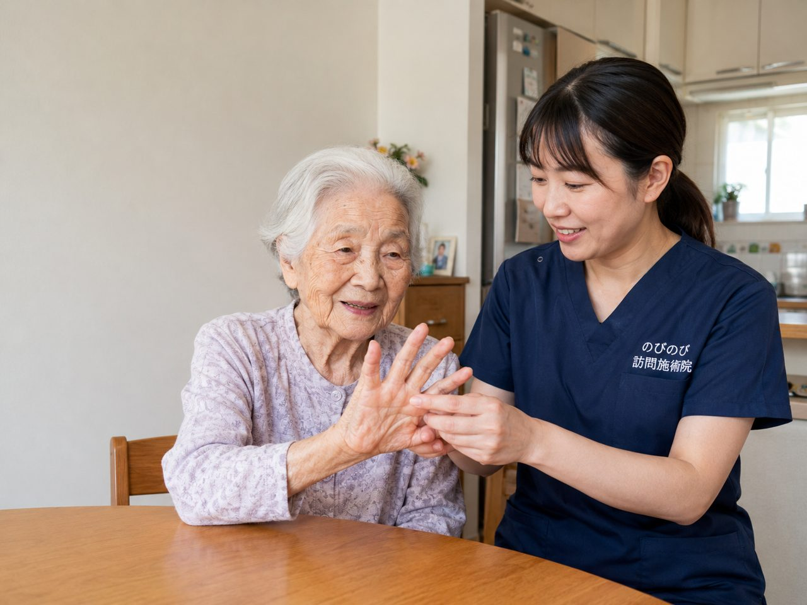

手や手首の関節が痛む、朝起きると指がこわばってうまく曲がらない。関節リウマチをかかえながら暮らすなかで、こうしたつらさは通院そのものを重い負担に変えてしまいます。大阪市淀川区で在宅ケアをお探しの方へ。リウマチの治療は膠原病内科などの主治医が土台を担い、訪問鍼灸マッサージはその治療を邪魔しない範囲で、こわばった関節まわりを和らげる補助を受け持ちます。ここでは、鍼灸にできることと限界、受診の目安、対応エリアや費用を順にお伝えします。
この記事のポイント
関節リウマチの診断や抗リウマチ薬などの管理は、膠原病内科・リウマチ専門医の主治医が主役です。鍼灸は病気そのものやリウマチの進行を治すものではなく、関節まわりの筋肉のこわばりを和らげ、血のめぐりをうながして痛みを軽くする補助にとどまります。効果には個人差があります。関節が急に強く腫れて熱をもつ、発熱をともなうときは、まず主治医へ。医師が必要と認め通院がむずかしければ、はり・きゅうの医療保険で受けられ、自己負担は1割でおよそ1回395円です。
淀川区で関節リウマチとつきあう、在宅という選択
大阪市淀川区は、新大阪や西中島南方、十三といった駅を中心に、オートロックのマンションや高層の集合住宅が数多く建ち並ぶ街です。にぎやかで便利な一方、関節リウマチを抱えていると「駅までの道のりが遠い」「エレベーターを乗り継いで通院するだけで一日分の力を使ってしまう」と感じる方によくお会いします。とくに朝のこわばりが強い時間帯は、身支度そのものが大きな負担になります。のびのび訪問施術院は、東三国や三国、宮原、木川、田川、十八条、新北野といった地域のご自宅まで国家資格を持つ施術者がうかがい、通院の負担なく施術を受けていただける在宅ケアをご用意しています。
関節リウマチは、手指や手首といった小さな関節に腫れや痛みが出やすく、しかも左右対称にあらわれやすいという特徴があります。塚本や加島のあたりで長くお住まいの方から、「両手が同じようにこわばって、ペットボトルの蓋が開けられない」といったお声をいただくこともあります。こうした日々のつらさに、生活の場である自宅で寄り添えることが、訪問施術の一番の強みです。
手指のこわばりや痛みそのものへの向き合い方は「手指の関節のこわばり・痛みを自宅でケア」に、関節が太くなったり曲がったりしてくる変化については「指先の関節の痛みや変形（ヘバーデン結節）」に分けて書きました。
治療の主役は主治医、鍼灸マッサージはその支え
まず大切にお伝えしたいのは、関節リウマチの治療の土台は、あくまでリウマチ科などの主治医による医療だということです。炎症を抑えるお薬による治療が中心であり、私たちが行う鍼灸マッサージは、その治療を続けながら日々のこわばりや痛み、こわばった筋肉のつらさをやわらげ、生活を送りやすくするための補助的な役割を担います。病気そのものを治すものではありませんので、この点は誤解のないようにお願いしています。
関節が赤く腫れて熱をもっているような強い炎症期には、無理に刺激を加えることは避け、まずは主治医の治療を優先していただきます。症状の掘り下げは「関節リウマチの痛み・こわばり」もあわせてご覧ください。効き方には個人差があり、どなたにも同じ結果をお約束できるものではないことも、正直にお伝えしておきます。
朝のこわばりと、手指・手首のつらさへ
関節リウマチの方を最も悩ませるのが、朝のこわばり（モーニングスティフネス）です。目が覚めても手がグーに握れない、洗顔や着替えに時間がかかる、台所に立っても包丁が持ちづらい。そんな状態が1時間以上続くこともあります。私たちは、こわばりが出やすい手指や手首、そして肩や首まわりの筋肉をていねいにほぐし、関節そのものには無理な力を加えないよう配慮しながら、動かせる範囲をゆっくり広げていきます。指の関節が太くなったり曲がったりしてきた場合は、リウマチとは別の変化であることもあります。そちらは「指先の関節の痛みや変形（ヘバーデン結節）｜訪問鍼灸マッサージ」で詳しくご紹介しています。
あわせて、痛みの少ない範囲で関節の可動域を保つ機能訓練も行います。使わずに固めてしまうと動きはさらに小さくなりがちですが、かといって無理に動かせば炎症を刺激しかねません。その日の腫れや痛みの様子を毎回うかがいながら、力加減と動かす範囲を調整するのが、対面で続ける在宅ケアだからできることです。西中島南方や新北野のマンションでも、限られたスペースでベッドや布団のそばで無理なく受けていただけます。
痛みの波、季節と気圧、そして冷えへの備え
関節リウマチの痛みには波があり、天候や気圧の変化に左右されやすいと感じる方が多くいらっしゃいます。雨が近づくと関節が重だるい、寒い朝ほどこわばりが強い。淀川区でも、冬場の底冷えや梅雨時の低気圧の頃に「調子が下がる」というお声をよくいただきます。冷えは関節周囲の血行を滞らせ、こわばりを長引かせる一因にもなります。
施術では、冷えやすい手先や足先をあたためながら血のめぐりをうながし、こわばった筋肉をゆるめていきます。ご自宅でできる保温の工夫や、痛みの強い日の過ごし方についても、そのつどお話ししながら進めます。進行によって関節の変形が見られる場合も、変形した部分に負担をかけない身体の使い方を相談しながら決めていきます。家事や身支度が少しでも楽になるよう、生活の動作に即したお手伝いを心がけています。
費用と保険のこと、淀川区の対応エリア
関節リウマチは、医療保険のはり・きゅうが対象とする6疾病（神経痛・リウマチ・頸肩腕症候群・五十肩・腰痛症・頸椎捻挫後遺症）の「リウマチ」に含まれます。ご利用には医療保険（療養費）と医師の同意書が必要ですが、要介護認定は不要で、介護保険の限度額とは別枠のため併用できます。同意書の手続きは当院がサポートしますのでご安心ください。なお、同一部位について医療保険のリハビリと鍼灸を同じ月に同時に算定することはできません。可動域を保つ機能訓練は施術に含み、エリア内は出張費なし・料金一律です。これらに追加の料金はかかりません。
料金は1回総額3,950円で、自己負担は1割の方で約395円が目安です。たとえば週2回の1割負担なら月およそ3,160円です。仕組みの詳しい説明は「料金はいくら？医療保険の自己負担額と仕組み」をご覧ください。淀川区での訪問については大阪市淀川区の訪問鍼灸マッサージ、どこまでうかがえるかは「対応エリアはどこまで来てもらえる？」で詳しくご紹介しています。新大阪・十三・東三国・塚本・加島など、淀川区一円のご自宅までおうかがいしますので、まずはお気軽にご相談ください。
よくある質問
淀川区のどのあたりまで来てもらえますか？
十三・西中島・新大阪から、東三国・加島・塚本・三国など淀川区内を広くうかがっています。淀川区以外にも東淀川区や北区などの対応エリアがあります。詳しい地域はお問い合わせの際にご確認ください。
リウマチでも保険で受けられますか？
リウマチは、はり・きゅうの療養費で対象として挙げられる病名のひとつです。医師が必要と認め、通院がむずかしい状態であれば保険の対象になります。専門医の治療と並行して受けてください。
抗リウマチ薬を飲んでいますが併用できますか？
はい。お薬は治療の土台なので、続けたまま受けてください。飲んでいるお薬を教えていただければ、その日の体調に合わせて無理のない範囲でケアします。自己判断で薬を減らしたりやめたりはしないでください。
痛い関節を強く押されませんか？
炎症の強い関節を強く刺激することはしません。関節そのものではなく、まわりの筋肉のこわばりを、やさしく和らげることを中心にします。炎症の強い時期は刺激を控えめにして進めます。
要介護認定を受けていなくても頼めますか？
受けられます。介護保険の認定の有無にかかわらず、医師が施術を必要と認めれば、はり・きゅうの医療保険で利用できます。医師の同意書が必要ですが、手続きはこちらで進めます。
ケアマネや施設とも連携できますか？
できます。介護保険を利用中の方は担当のケアマネジャーと連絡を取りながら進められますし、施設にお住まいの方への訪問にも対応しています。ご家族やケアマネからのご相談も承ります。
費用は介護保険の限度額に含まれますか？
含まれません。はり・きゅうの施術費用は医療保険で計算するもので、介護保険の区分支給限度額とは別枠です。デイサービスなどのケアプランの枠を減らすことなく利用できます。
どれくらいの頻度で受けるとよいですか？
決まりはなく、関節の状態や生活に合わせて相談しながら決めます。目安として週1〜3回で続ける方が多いです。効果の出方には個人差があるので、無理のないペースから始めてください。